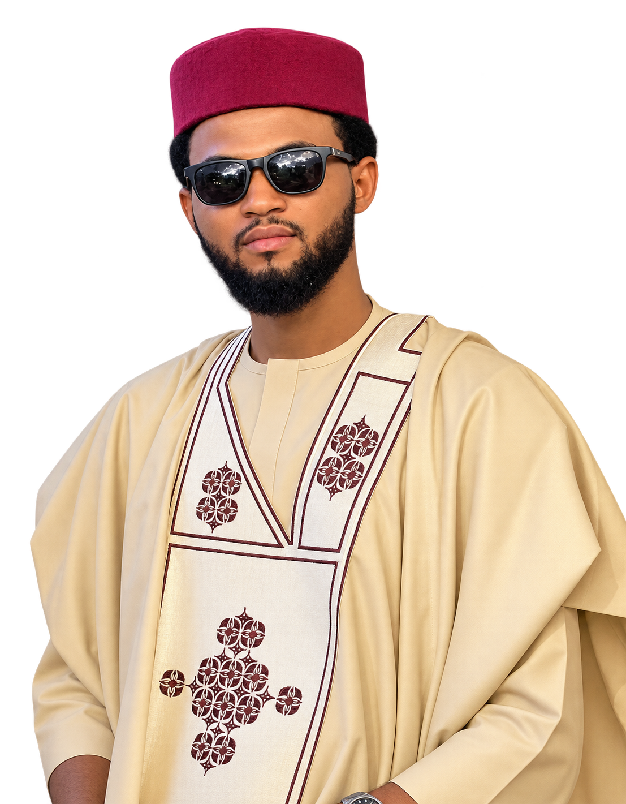

Muhammad Nafiu Umar is a final-year Computer Engineering student at Ahmadu Bello University, Zaria, specializing in Networking. He builds his foundation on networking fundamentals, web development, and everyday productivity systems — with the same steady focus he brings to the pool table and the pool. Grounded, curious, and just getting started.
“Never forget what you are, the rest of the world will not. Wear it like an armor and it can never be used to hurt you.” — Personal motto